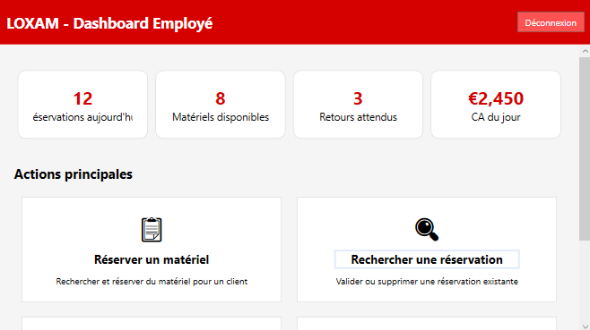
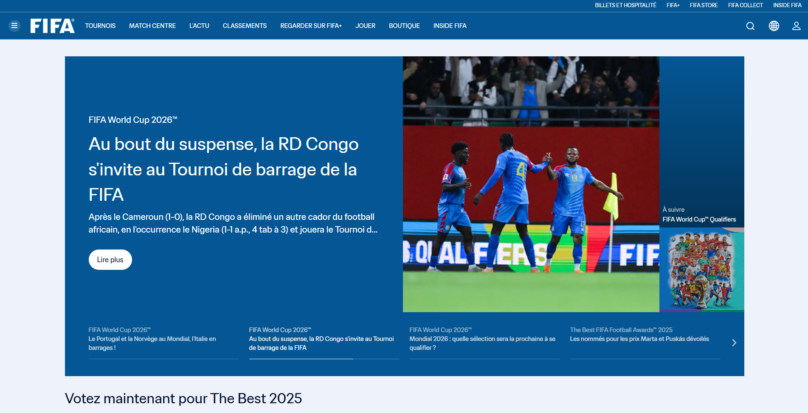
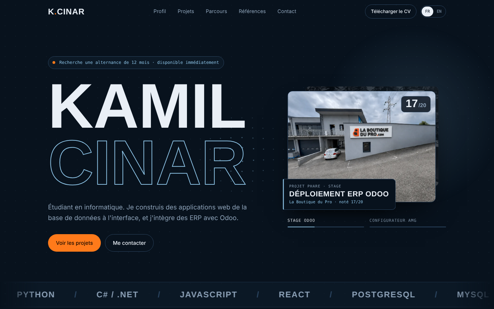

Je m'appelle Kamil, étudiant en BUT Informatique à Annecy (parcours IAMSI). J'aime construire des applications de bout en bout, de la base de données à l'interface, avec un intérêt marqué pour les ERP, Odoo en tête. Hors écran : l'automobile et tout ce qui est mécanique.
Recherche une alternance de 12 mois · disponible immédiatement
Kamil Cinar
Étudiant en informatique. Je construis des applications web de la base de données à l'interface, et j'intègre des ERP avec Odoo.
- PHP
- Python
- C# / .NET
- JavaScript
- React
- PostgreSQL
- MySQL
- Odoo
- WordPress
- Docker
- Linux
- Git
Profil
Qui je suis
Contact
- Localisation
- Haute-Savoie, France
- kamil.cinarpro@gmail.com
- kamilcinar
- GitHub
- Ka-ory
Langues
- FRFrançaisNatif · C2
- TRTurcBilingue · C2
- ENAnglaisIntermédiaire sup. · B2
- ESEspagnolPré-intermédiaire · A2
- JAJaponaisDébutant · A0
Passions et loisirs
- Apprentissage du piano
- Réalisation et montage vidéo
- Programmation & veille tech
- L'univers de l'automobile
- Cours de volley-ball
Compétences générales
- Innovant, dynamique et confiant
- Digne de confiance & responsable
- Adaptable & aime apprendre
- Rigueur & contrôle qualité
Compétences techniques
Frontend
- JavaScript (ES6+)
- React
- HTML5
- CSS3 / Sass
- Three.js
Backend & données
- Python
- PHP
- C# / .NET
- PostgreSQL
- MySQL
ERP & CMS
- Odoo
- WordPress
- Principes de SEO
Outils & systèmes
- Git / GitHub
- Docker
- Linux (Debian)
- VS Code / Visual Studio
- PowerAMC
- Visual Paradigm
Réalisations
Projets
Ouvrez un projet pour lire sa fiche complète : contexte, ma part du travail, stack et liens.
17/20
Déploiement d'un ERP Odoo
Rendre Odoo 19 vraiment opérationnel chez un e-commerçant de 30 000 références : devis et factures, logistique, catalogue et automatisations.
- Odoo 19
- QWeb
- Python
- WooCommerce
CRMPower Pages
NameraKorp
Un site Power Pages relié à un CRM Dataverse, mené en Scrum sur 3 sprints.
- Power Pages
- Dataverse
- Scrum
Configurateur AMG 3D
Une expérience 3D temps réel pour configurer une AMG : peinture, jantes, vitres et cycle jour/nuit.
- Three.js
- WebGL
- JavaScript

Application de gestion (Loxam)
Un ERP de bureau pour la location de matériel et la gestion des stocks.
- C#
- .NET WPF
- MySQL

Clone de site e-commerce (FIFA)
Clone d'un site e-commerce pour étudier l'architecture web, la base de données et le responsive.
- PHP
- SQL
- JavaScript

Parcours
Formation et expérience
Formation
-
BUT Informatique · Parcours IAMSI
Université Savoie Mont-Blanc, Annecy
Développement web (front/back), gestion de bases de données, management de SI.
-
Baccalauréat technologique (STMG)
Lycée du Granier, Savoie
Spécialité Systèmes d'Information et de Gestion (SIG), mention Assez Bien.
Expérience
-
KC Tech
Entreprise individuelle (micro-entrepreneur)
Prestations Odoo et création de petits sites web.
-
Stagiaire intégrateur Odoo
La Boutique du Pro · Méry (Savoie)
Digitalisation et automatisation des processus commerciaux autour d'Odoo 19 et de WooCommerce. Stage et soutenance notés 17/20.
-
Agent d'accueil en déchetterie
Trialp, secteur SIBRESCA
Accueil des usagers, conseil sur le tri, entretien du site.
-
Préparateur de véhicules
Jean Lain Occasions, Chambéry
Contrôle qualité, préparation esthétique et gestion du parc. Développement de la rigueur et de l'orientation client.
Références
Qui peut témoigner
Pascal COLIN
Enseignant d'UML et SQL
USMB, Annecy
Coordonnées disponibles sur demande
Luc DAMAS
Enseignant d'HTML et JS
USMB, Annecy · luc-damas.fr
Coordonnées disponibles sur demande